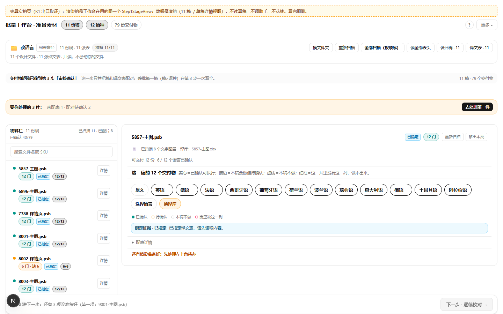
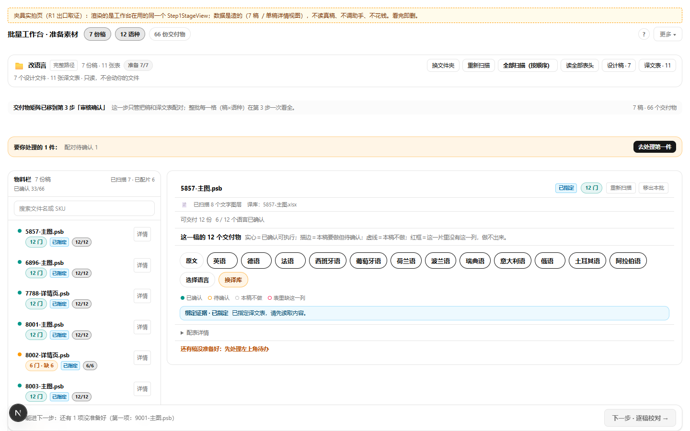
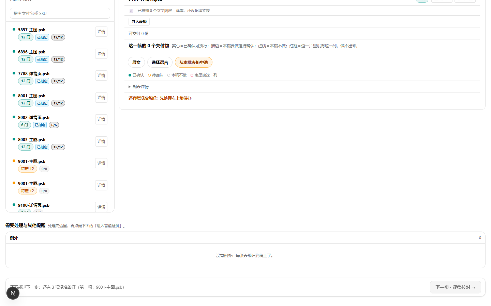
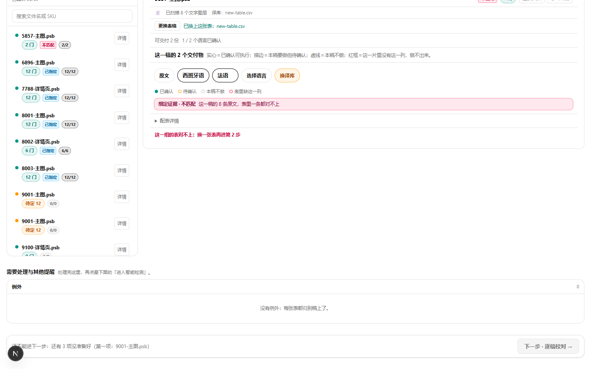
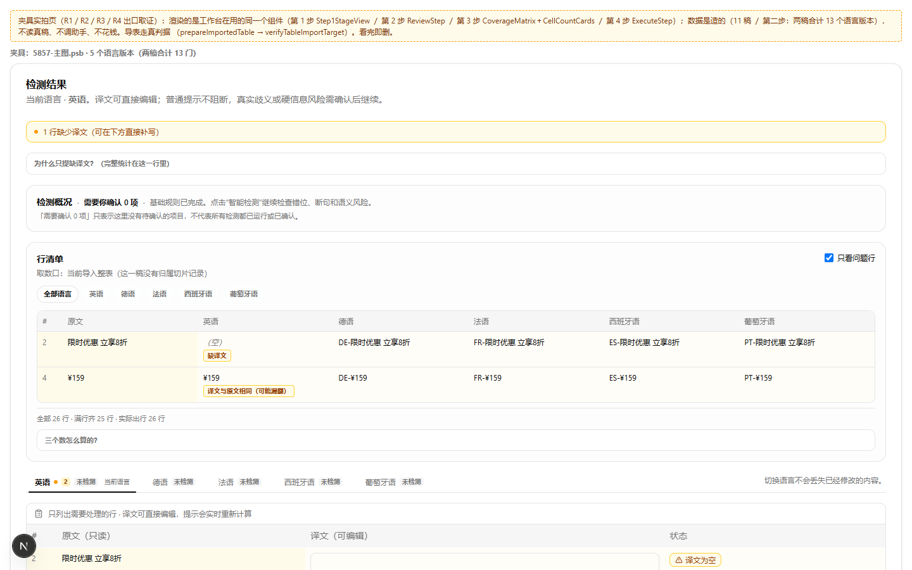
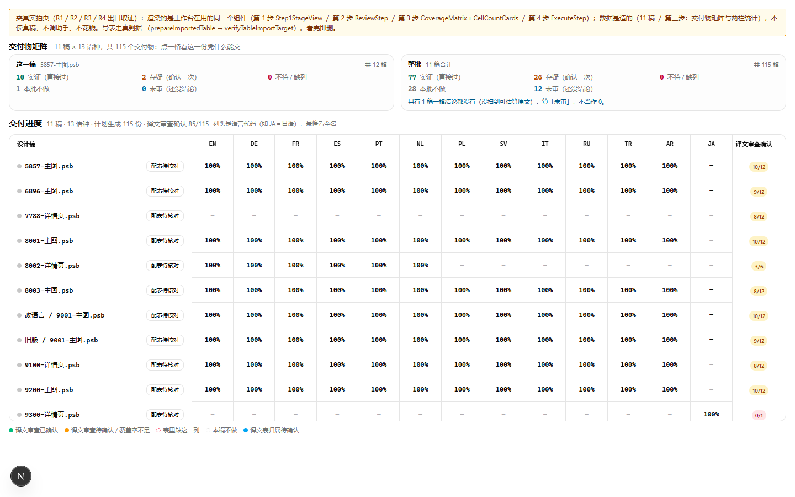
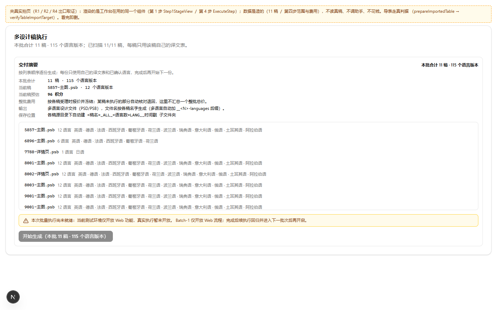

执行报告/ 四步工作台 UI/UX/ 2026-10-31
按《执行方案_20261031_四步工作台UIUX_研究与对抗审查定稿》分六批推进：R0 取证 → R1 第一步 → R2 就地导表 → R4 第四步 → R3 第二三步 → R5 整合验收。本报告是收口记录：审查结论、修掉的 6 个真问题、一轮复跑的门禁读数、缺口与未做的事。
六批都做完了，审查抓到 6 个真问题、全部修好并留了永久用例；证伪 1 条不成立；1 条产品口径冲突留给你拍。
代码没提交、没合并、没上站——按规矩，提交和发布每次都等你点头。
language-exclusion-memory.test.ts:144）。锁定基线 8 个文件差异、入口迁移对照、失败测试基线。确认探针页只配假数据，不读真稿、不花钱。
真组件改造，不是画图：7 稿 / 11 稿两种规模在 1440 与 1366 宽下实拍；表库、退出态一并收进同一屏。
单文件归到单稿、坏文件保留旧表、切稿时迟到的响应不串到别的稿。浏览器实拍三态。
把「当前稿预估」和「本批合计」拆成两处，不再让一个数代表两件事；11 稿与 7 稿两种规模实拍。
概况压成一行、矩阵常显、统计压紧。统计口径重做：total = ok + warn + bad + unreviewed，「本批不做」单列；列集合改成全批并集，与矩阵同一个算法。11 稿读数 115 格，与页头交付物数相等。
写审分离做对抗审查，一轮收敛：6 条修好、1 条证伪、1 条待拍。门禁全部复跑，本报告与飞书件是本批产物。
逐稿卡带只做了代码核对；整链真机未走完；R5 没重新截图（dev 缺 DATABASE_URL），仅改文案与逻辑。
写代码的人不自审；审查只出问题、不给自己批条。每一条都落到具体行，并配一条能红的用例。
| ID | 严重度 | 落点 | 改前的失效场景 | 修法与证据 |
|---|---|---|---|---|
| I-1 | Important | workbench-view.tsx:3232 | 就地导入的表导完后，第 1 步仍判「表还在读／读表失败」，用户永远过不去。 | 导入成功处补写 importedTableReadState 到 ref 与 state。真闸探针：不补 → unread 挡住；补 ready → 放行（4 条用例）。 |
| A2 | Important | workbench-view.tsx:3177 | 文件被占用／无权限时 arrayBuffer() 抛出，界面停在「正在读表」——假状态比报错更糟。 |
try/catch 落 error 并给一句可读文案；契约门 R5-2 锁定。 |
| A4 | Important | workbench-view.tsx:2848 | 先导入、再从本批表里挑另一张：界面说「已换上」，归组仍用导入那张。 | 挑本批表时先撤掉该稿的导入表与导入态；契约门 R5-3 锁定。 |
| A5 | Important | table-grouping.ts:278 | 稿名读不出 SKU、但用户亲手把表指给它：原逻辑整稿判死，界面说换了、组里 0 张。 | 「亲手指定」优先于 SKU 判断；新用例＋负控（空表 → 仍报 DRAFT_SKU_UNKNOWN）。 |
| I-3 | Important | cell-count-cards.tsx:35 | 统计卡抬头「共 N 格」不含「本批不做」，与下面五行、与矩阵两个口径。 | 改成「共 N 格要交付 · 另有 M 格本批不做」；用例断言五行和 = total + off。 |
| D-legend | Nit | coverage-matrix.tsx:263 | 矩阵实际画了「未审」虚线灰格，图例没有这一项，读者易当成本稿不做。 | 图例补第 6 项；用例断言 data-cell-kind="none" 与图例文案同屏。 |
矩阵取的是按稿解析表，导入成功那一刻就写进去了；全局解析表只是绑定证据的兜底，且按稿表优先（binding-evidence.ts:282-285）。不改。
原来界面 5MB（table-file.ts:14）、解析 2MB（csv.ts:12），3MB 的表会「界面放行、解析报错」。只改解析层等于没改——用户仍被界面和助手挡在 5MB，所以四处一起改：CSV 解析、浏览器与导入守卫共用的表上限、助手读表端点（read-table-path.js）、助手表头调查（table-survey.cjs）。
文案同步「超过 20 MB」；批量导入的拒绝理由改成按常量算数字。用例钉两个常量各为 20MB、超出 1 字节必报过大。助手两处要出新包才生效。
tsc --noEmit rc=0。工作台 5 个测试文件 103 条全过，rc=0。
第 1 步契约门：判据 113 项 · 行 37 条 · 失败 0，rc=0（原 102/32，只加不减）。工作台范围契约 54 条断言 ok；批量台守卫 39 项 ok。
排版 114 条 ok；词典 2470 条、硬伤 0（边界差异 97 条为提示）；英文字体子集 rc=0；中文字体子集 rc=0——删夹具页后由红转绿，证明 R3 新文案不缺字。
35 files · 439 passed / 1 failed。红的是 language-exclusion-memory.test.ts:144：它钉的字面在 HEAD 里 0 次命中（HEAD 是两行写法 workbench-view.tsx:2411-2412），属存量、非本轮，单列上报。







DATABASE_URL），而 R5 只动了文案与四段逻辑、没动视觉。新增的两句抬头改用真实 DOM 用例验证（渲染真组件），没有新照片。ReviewStep，但夹具 onProceed 为空，没有逐门点完再走下一步。assistant-setup-banner.tsx:149-150）。没有为对齐方案加常驻提示；故障态仍是一张可处理卡。没有任何提交、合并、推送、出包或部署；工作树之外零改动。夹具页 src/app/(zh)/tmp-step1-probe/ 是 R1 新建的未跟踪文件，已在 R5 删除，仓库里不留痕。
按发布三段轨，本方案不构成上线授权。下一步要你点名：只提交 / 合并并推 develop / 出包上测试站。